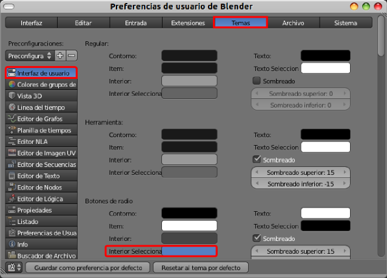

Actividades
1- Visualiza productos audiovisuales hechos con Blender
Accede a la sección de vídeos de la web oficial (www.blender.org/features-gallery/movies) y pasa un rato viendo productos desarrollados con Blender.
Usa buscadores de vídeos como Vimeo (www.vimeo.com) o Youtube (www.youtube.com) para encontrar ejemplos en los que Blender ha sido utilizado en anuncios publicitarios, videojuegos, virtualizaciones...y que no aparenen en la web oficial.
2- Cambia el aspecto de la interfaz
Haz varios cambios que te apetezcan mientas investigas por las Preferencias de usuario. Después recupera la configuración por defecto. Recuerda que al hacer eso deberás volver a hacer el cambio de idioma.
Uno de los apartados donde experimentar es Archivo/Preferencias de usuario en el apartado Temas donde se configura todo lo relativo a la estética de la interfaz. El campo que se indica en esta imagen cambia el color de los botones.
3- Conoce Blender 2.49, por curiosidad
- Anímate a descargar la versión 2.49b para conocer cómo era la interfaz antes del gran salto de las series posteriores.